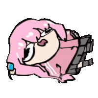

QC звука и ffmpegпроверка и сборка дорожек локально
Календарь и тайтлывыход серий, сроки и голосование

Упс
Вход в студию
Вход по одноразовому коду из Telegram — без паролей.
1Откройте бота студии в Telegram
2Отправьте команду /desktop
3Введите 6 цифр из ответа
Код живёт несколько минут и работает один раз. Можно вставить его целиком — Ctrl+V.
Phoenix
Основное
Студия
Список серий
Все отчёты студии: поиск, фильтры и массовые операции.
Номер
Название
Статус
Приоритет
Срок
Исполнители
🗂️
Ничего не найдено — попробуйте другой фильтр.
0 выбрано
Отчётов: 0 · клик по строке — открыть карточку, чекбоксы (Shift — диапазоном) — массовые операции · Ctrl+Shift+P — показать/скрыть окно из любого места